Bienvenid@
En esta pagina podras mirar un poco sobre la banda de guerra del cbtis numero 1, en diferentes eventos a los cuales fueron solicitados
¿Qué es la Banda de Guerra?
La banda de guerra es una agrupación cívica encargada de rendir honores a la bandera, participar en eventos oficiales y fomentar valores como disciplina, respeto y trabajo en equipo.
Contenido
a continuacion te mostrare una galeria de fotos de ensayos, eventos de graduacion, concurso intercbtis e incluso de convivencia con otra banda de otro bachiller.
tu podras formar parte de las filas de esta banda de guerra, al momento que ingresas al centro de bachillerato tecnologico indistrial y de sevicios numero 1
cualquier duda que te surga al respecto de esta banda podras acercarte al encargado, el instuctor manuel velazquez conocido como Meño que estara para apoyarte cuando lo necesites
Video de Presentación
¿Quieres formar parte de la Banda de Guerra?
Si te interesa formar parte de la Banda de Guerra del CBTis No.1, debes estar al pendiente de las convocatorias oficiales al momento de ingresar al bachillerato.
La invitación está abierta para todos los alumnos de nuevo ingreso que tengan interés en la disciplina, el trabajo en equipo y el orgullo de representar a la institución.
Mantente informado en la página oficial del plantel:
Galería de Imágenes
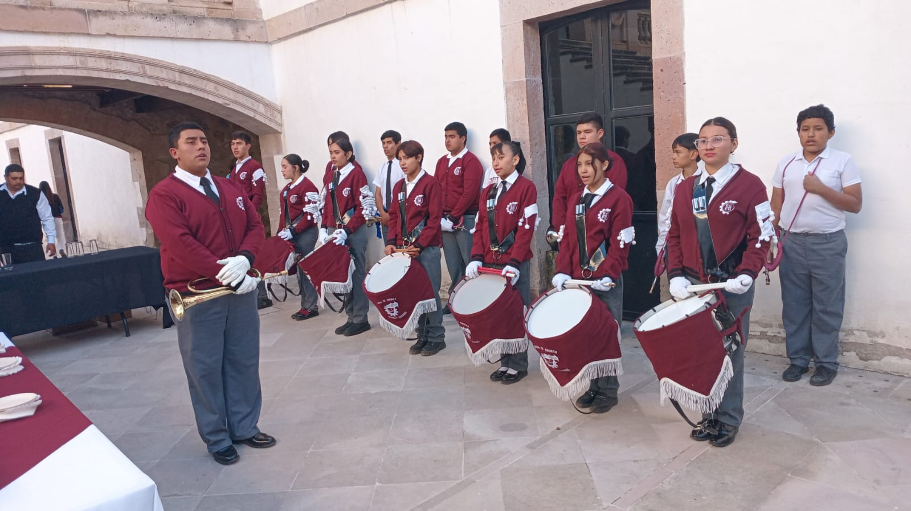
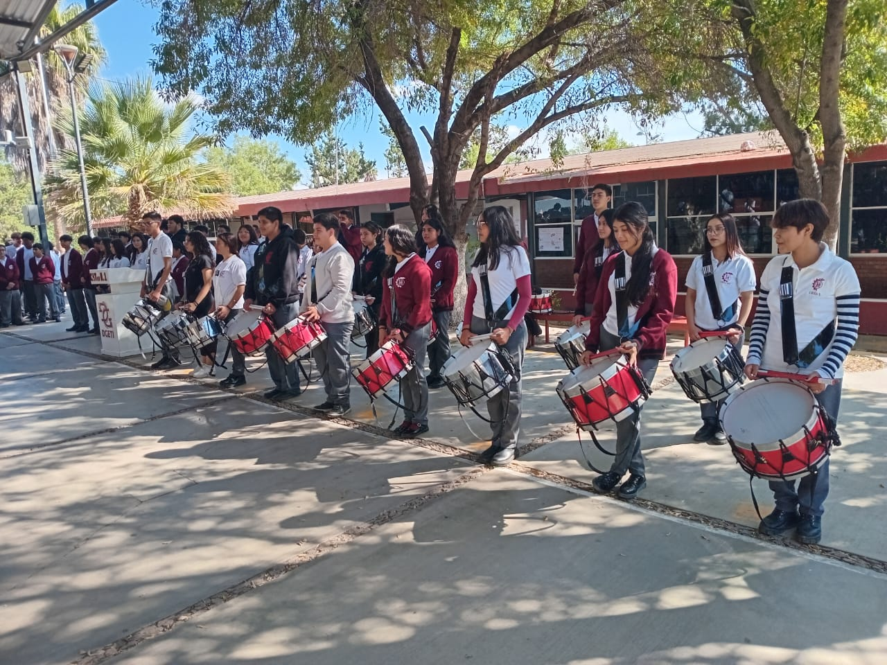
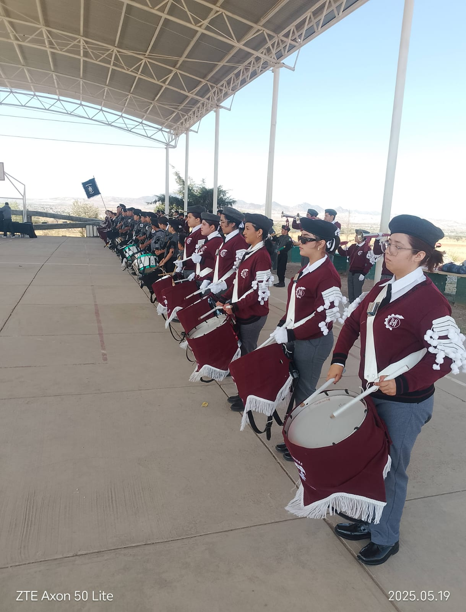
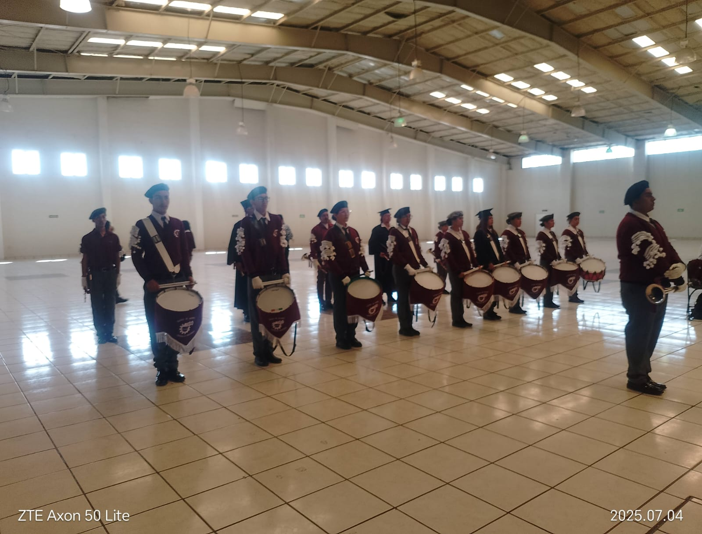
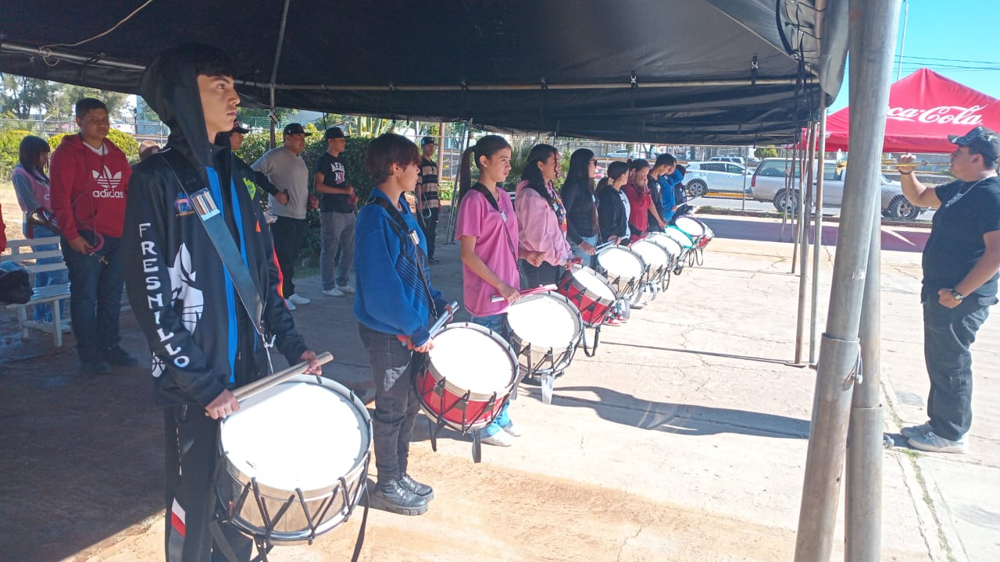
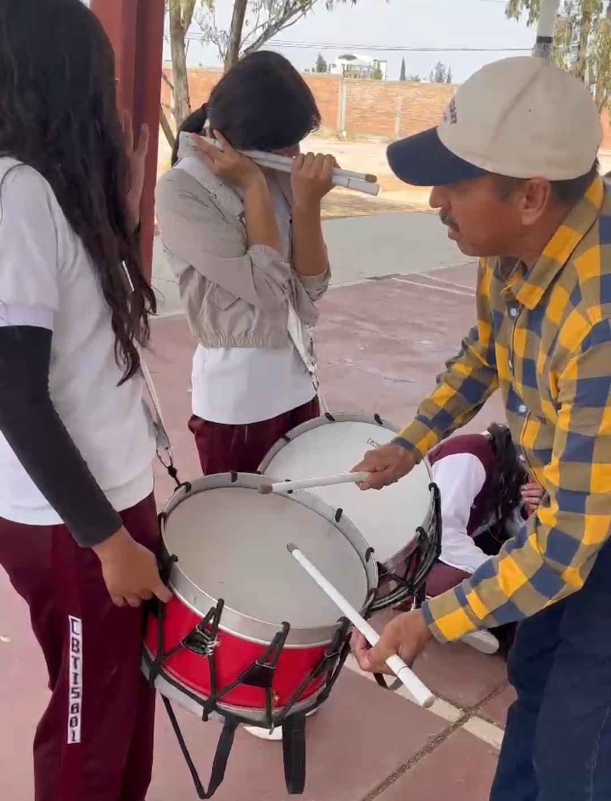
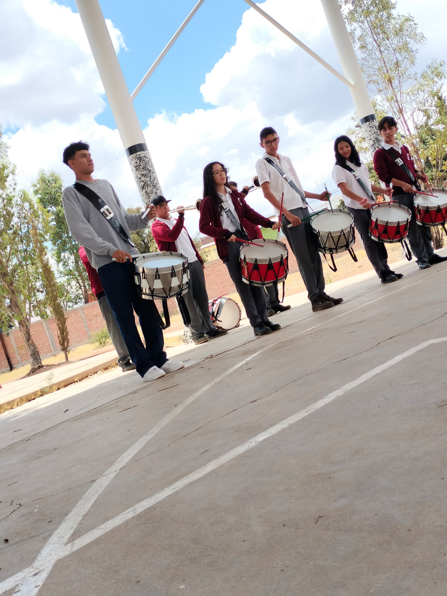
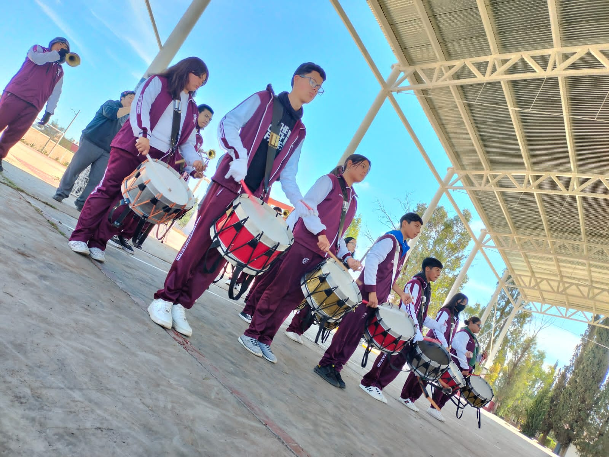
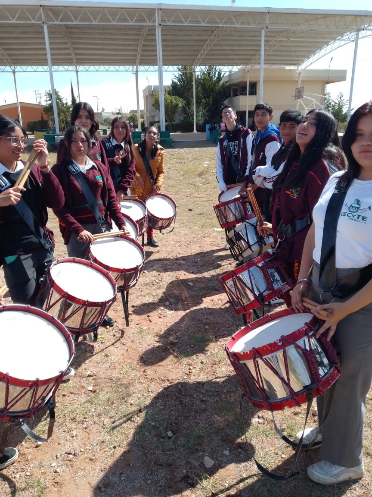
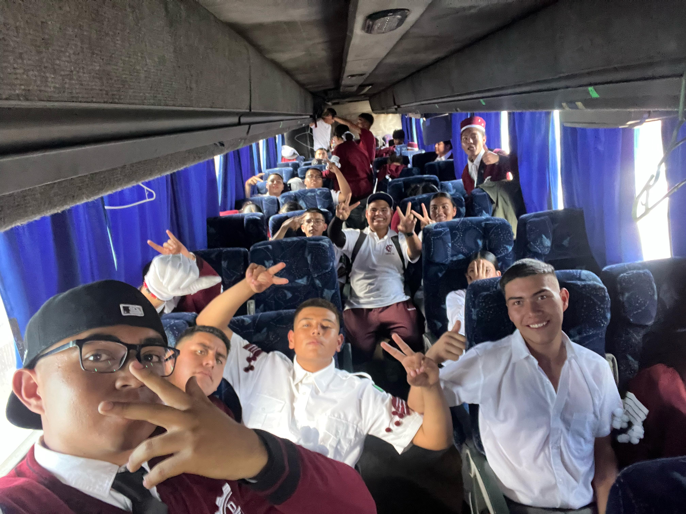
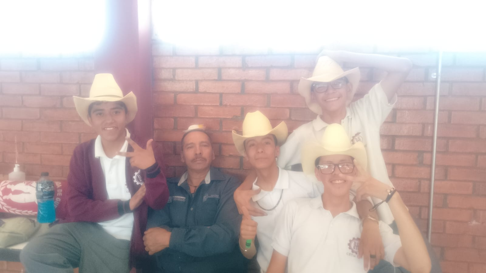
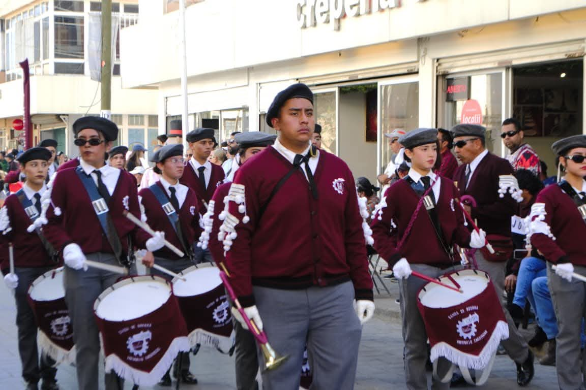
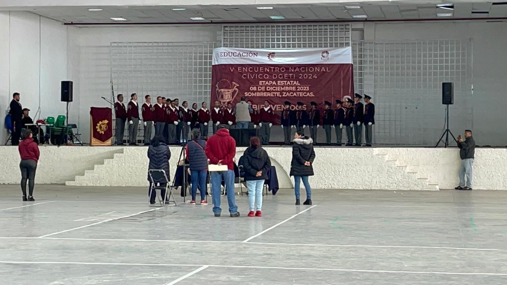
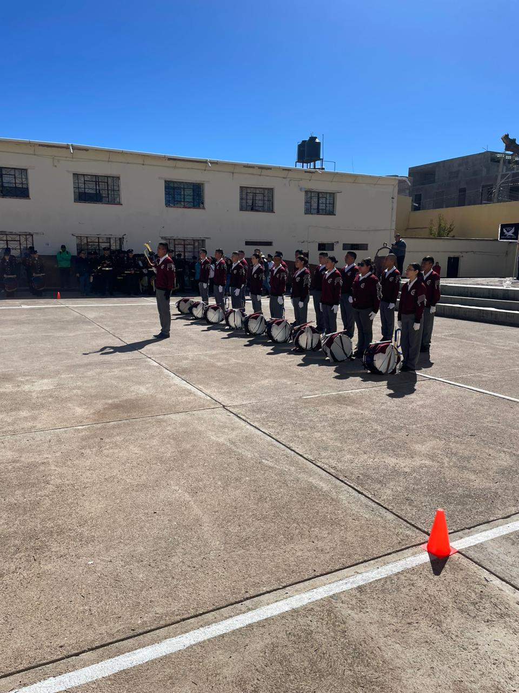
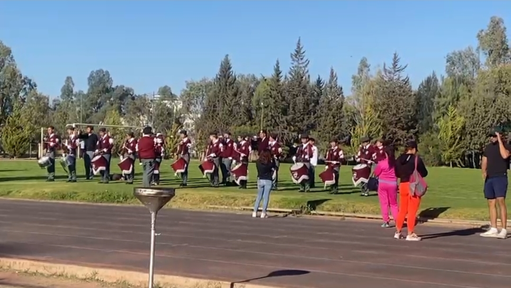